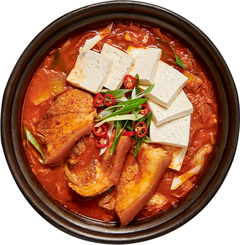

김치찌개
재료:김치(국내산), 두부(국내산) 대파(국내산),돼지고기(국내산),고추(중국산),팽이버섯(국내산)
김치찌개의 효능
김치찌개에 사용되는 김치는 발효 과정을 거치면서 유산균이 형성되어 있습니다. 이 유산균은 장 내의 유익한 세균을 증식시키고 장건강을 촉진시킵니다. 2. 면역력 강화: 김치찌개에 사용되는 김치는 비타민 C, 베타카로틴, 비타민 K 등 다양한 영양소를 함유하고 있습니다.